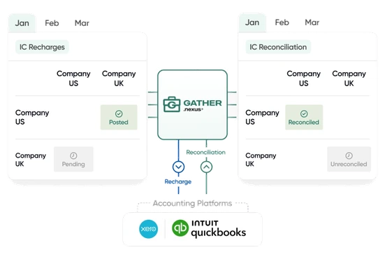
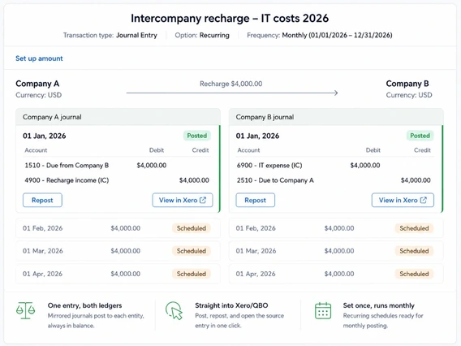
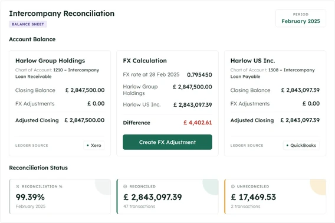
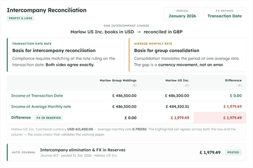

A central hub for managing intercompany activity. Eliminate manual reconciliation work, maintain full visibility of counterparty balances, and ensure intercompany relationships remain in balance with our quadruple entry recharge engine.

Centralised counterparty transaction posting and intercompany reconciliations with automatching; real time visibilitythroughout the reporting period and consolidation working papers integration and validation
Quadruple entry posting engine to keep counterparties in balance. Syncs with Xero and QuickBooks in real time.
Matrix and timeline views for in-month balance monitoring across all counterparty pairs.
Autoreconcile matching intercompany transactions, leaving errors, omissions and FX issues for further review and central correction.
Validate intercompany reconciliation data against your consolidation working papers.
Built on a quadruple-entry posting framework, the central hub automates intercompany recharges, including across currencies, syncing invoices, bills and journals in real time with Xero and QuickBooks to ensure counterparties remain in balance.

Keep track of the status of counterparty pairs in real time, not just at month end. Matrix and timeline views give finance teams instant visibility of in-month activity and outstanding balances.

Automated intercompany reconciliation that runs continuously, not just at period close. Identify issues arising between counterparty pairs with full visibility of matched and unmatched items. Resolve errors, omissions or FX issues within GATHER and sync to Xero or QuickBooks.

Validate intercompany reconciliation results against consolidation working papers, ensuring total alignment between intercompany counterparty status and group financial reporting before sign-off.

Start your 30-day free trial, full access, no credit card required.